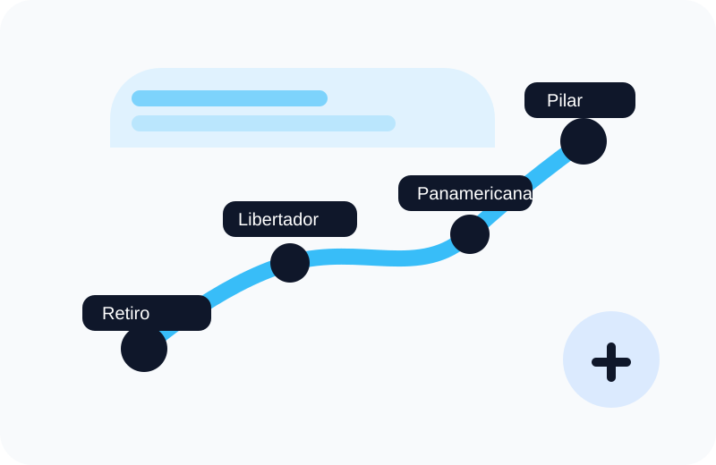
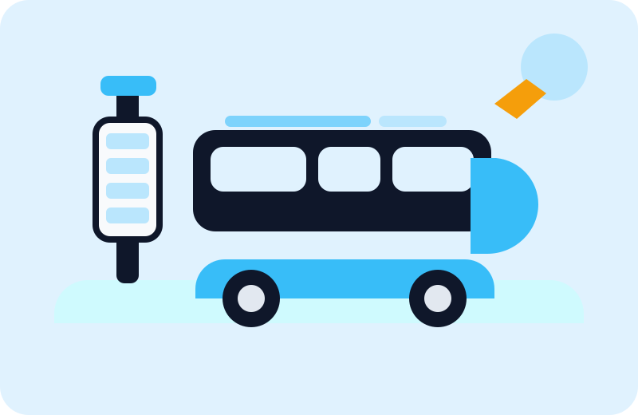

Destinos destacados dentro del recorrido extendido.
Transporte interurbano de corta distancia
Ruta 4: conectá Retiro con Pilar de forma más ágil
Una propuesta visual, clara y funcional para consultar recorridos, horarios, tarifas y servicios del corredor Retiro - Pilar.
Ver recorrido Conocer servicios
Salidas frecuentes
Compra orientativa
Accesibilidad incluida
Medios de pago para adaptar la experiencia a distintos usuarios.
Servicios principales, más criterios de accesibilidad específicos.
Compra online
Buscá y reservá tu pasaje
Elegí origen, destino, fecha y cantidad de pasajeros. La plataforma te mostrará los servicios disponibles para viajar en Ruta 4.
- Destinos: Pilar Centro, Del Viso, Manuel Alberti y Escobar.
- Datos claros sobre frecuencia, estado del servicio y medios de pago.
- Consulta simple, visual y pensada para una navegación rápida.
Una conexión directa hacia Pilar
La Ruta 4 une la Terminal de Retiro con distintos puntos estratégicos del norte del Gran Buenos Aires. Es una alternativa pensada para estudiantes, trabajadores y pasajeros frecuentes.
Salida desde Retiro
El recorrido inicia en una zona con acceso a subtes, trenes y colectivos.
Destino Pilar
El servicio finaliza en una zona de gran movimiento residencial, educativo y comercial.

Postales del recorrido
Una forma de volver la propuesta más cercana: visualizar momentos y espacios asociados al viaje.

Salida ordenada
Información clara desde el inicio del viaje y una experiencia más intuitiva para el usuario.

Compra simple
Tarifas visibles, medios de pago disponibles y consulta rápida antes de salir.

Viaje para todos
La propuesta incorpora accesibilidad como parte real del servicio, no como un detalle secundario.
Destinos populares
Retiro - Pilar Centro
Servicio directo hacia una de las zonas de mayor movimiento del norte bonaerense.
Retiro - Del Viso
Una opción práctica para pasajeros que viajan por estudio, trabajo o trámites.
Retiro - Escobar
Conexión rápida con una zona residencial y comercial en crecimiento.
Servicios destacados del día
Retiro → Pilar Centro
Salida: 08:30 | Llegada estimada: 09:45
Precio: $2600
Seleccionar pasajeRetiro → Del Viso
Salida: 10:00 | Llegada estimada: 11:05
Precio: $2200
Seleccionar pasajeRetiro → Escobar
Salida: 12:15 | Llegada estimada: 13:20
Precio: $2400
Seleccionar pasajeEstado del servicio
Servicio funcionando con normalidad
Última actualización: hoy, 08:00 hs.
Accesibilidad incorporada al servicio
La propuesta no se queda solo en comodidad: también contempla ascenso asistido, información visual y sonora, espacios reservados y canales de consulta específicos.
Medios de pago
Tarjeta de crédito
Pagá tu pasaje de forma rápida y segura desde la plataforma.
Mercado Pago
También podés abonar con billetera virtual y recibir el comprobante por mail.
SUBE
Disponible para tramos habilitados del recorrido y viajes frecuentes.
Preguntas frecuentes
¿Puedo cancelar mi pasaje?
Sí, hasta dos horas antes del horario de salida.
¿Dónde sale el micro?
Desde la Terminal de Retiro, con paradas intermedias señalizadas.
¿Puedo llevar equipaje?
Sí, cada pasajero puede llevar un bolso de mano y una valija pequeña.
¿Cómo recibo el pasaje?
El pasaje se envía al correo electrónico declarado en la compra.